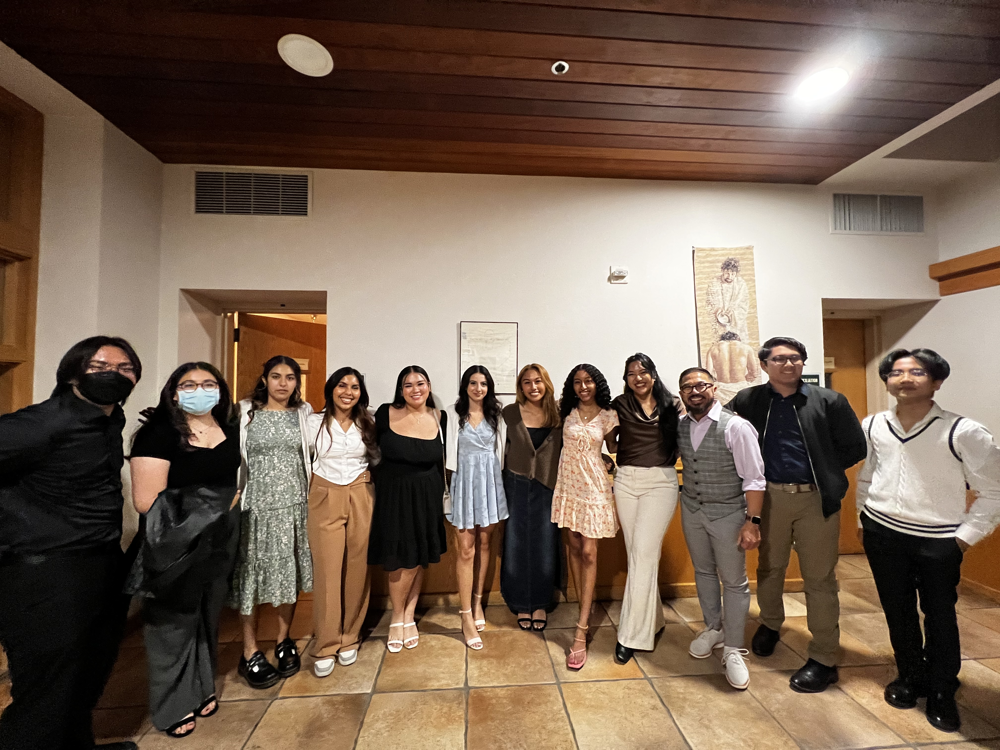

Volunteering
St. Paul the Apostle Catholic Church
Piano Accompanist
As a piano accompanist, I play alongside instrumentalists and vocalists for mass services and various other events. On occassion, I assist teaching elementary and junior high choirs throughout the year.
Catecatical Student Body
As a member of CSB, I am a student volunteer that assists with managing young adult Confirmation classes, events, and social media.
